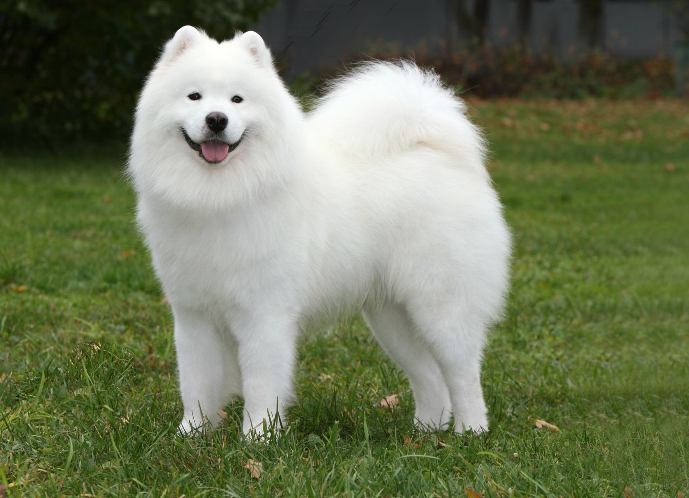

Лайка
Лайка — загальна назва порід мисливських собак Сибіру, входить до секції шпіців. Використовувались жителями тундри задля полювання та пересування. Слово «лайка» — запозичене з російської мови, де утворене від рос. лаять («гавкати»).Мисливський собака лісової смуги Уралу, Західної й Середньому Сибіру. Виведений в декількох кінологічних центрах на основі мисливських промислових собак місцевих порід лайок (хантійських і мансійських). Породотворення почалося ще в кінці XIX століття, але до планомірного розведення приступили в 20-х роках XX століття. Назва пов'язана з характерною особливістю цієї породи — лайки багато гавкають.
Лайок використовують для полювання ведмедів, хутрових звірів (білок, соболів, куниць тощо), копитних тварин (лосів), на лісову і водоплавну дичину. Розшукавши звіра чи птицю, лайка привертає їхню увагу гавкотом і затримує до моменту приходу мисливця. Звіра чи птицю переслідує мовчки.